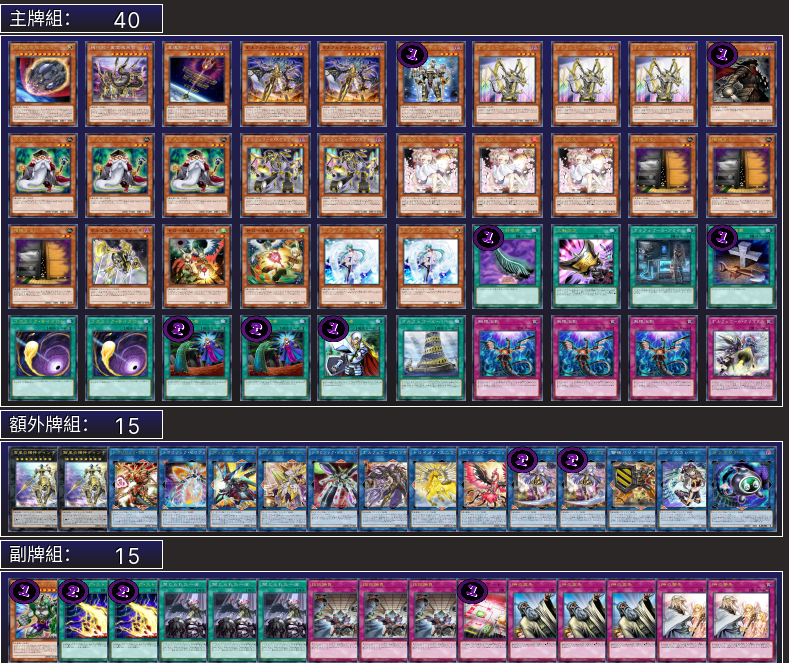

【主題牌組】「自奏天琴」牌組介紹（オルフェゴール | ORCUST | 自鸣天琴 )
自奏天琴的翻譯由來是結合了「オルフェウス」＋「オルゴール」
オルゴール是音樂盒，自動演奏的樂器。另一個常用"自鳴"天琴這個翻譯，則是指日文中音樂盒的另一個稱呼"自鳴琴"。
オルフェウス是奧菲斯，希臘神話中的一位音樂家，曾有試圖有復活妻子的故事，在死後他的琴也成了天琴座，也就是系列名字中天琴的由來，另一個常用翻譯的自奏"聖樂"則是指奧菲斯。
本家卡片介紹－
《自奏天琴﹒嬉游曲琴魔》
此卡名的①效果1回合僅能使用1次。 ①：把墓地的此卡除外才能發動。從牌組把此卡名以外的1體「自奏天琴」怪獸特殊召喚。此效果發動後，直到回合結束時我方僅能特殊召喚闇屬性怪獸。
此卡名的①效果1回合僅能使用1次。 ①：把墓地的此卡除外才能發動。從牌組把此卡名以外的1體「自奏天琴」怪獸特殊召喚。此效果發動後，直到回合結束時我方僅能特殊召喚闇屬性怪獸。
《自奏天琴﹒詼諧曲骷髏》
此卡名的①效果1回合僅能使用1次。 ①：把墓地的此卡除外，以此卡名以外的我方墓地1體「自奏天琴」怪獸為對象才能發動。那體怪獸特殊召喚。此效果發動後，直到回合結束時我方不是闇屬性怪獸不能特殊召喚。
此卡名的①效果1回合僅能使用1次。 ①：把墓地的此卡除外，以此卡名以外的我方墓地1體「自奏天琴」怪獸為對象才能發動。那體怪獸特殊召喚。此效果發動後，直到回合結束時我方不是闇屬性怪獸不能特殊召喚。
《驅魔修女﹒伊雷娜》
此卡名的①②效果1回合各僅能使用1次。 ①：從手牌把1張「驅魔修女」卡回到牌組最下面才能發動。我方從牌組抽1張卡。我方場上有「驅魔修女 索菲亞」存在的場合，我方再回復800生命值。 ②：我方‧對方墓地之卡因為對方而從墓地離開的場合才能發動。把1體「驅魔修女」超量怪獸在我方場上之此卡上方重疊當作超量召喚從額外牌組特殊召喚。
此卡名的①②效果1回合各僅能使用1次。 ①：從手牌把1張「驅魔修女」卡回到牌組最下面才能發動。我方從牌組抽1張卡。我方場上有「驅魔修女 索菲亞」存在的場合，我方再回復800生命值。 ②：我方‧對方墓地之卡因為對方而從墓地離開的場合才能發動。把1體「驅魔修女」超量怪獸在我方場上之此卡上方重疊當作超量召喚從額外牌組特殊召喚。
《自奏天琴・卡農曲大砲》
此卡名的①效果1回合僅能使用1次。 ①：把墓地的此卡除外才能發動。從手牌把此卡名以外的1體「自奏天琴」怪獸特殊召喚。此效果發動後，直到回合結束時我方不是闇屬性怪獸不能特殊召喚。
此卡名的①效果1回合僅能使用1次。 ①：把墓地的此卡除外才能發動。從手牌把此卡名以外的1體「自奏天琴」怪獸特殊召喚。此效果發動後，直到回合結束時我方不是闇屬性怪獸不能特殊召喚。
《自奏天琴﹒夢幻崩影》
此卡名的②效果1回合僅能使用1次。 ①：此卡不會被和連結怪獸的戰鬥破壞。 ②：把墓地的此卡除外，以場上1體表側表示怪獸為對象才能發動。從牌組把此卡名以外的1體機械族﹒闇屬性怪獸送去墓地。作為對象的怪獸的攻擊力直到回合結束時上升送去墓地的怪獸的等級×100。此效果的發動後，直到回合結束時我方不是闇屬性怪獸不能特殊召喚。
此卡名的②效果1回合僅能使用1次。 ①：此卡不會被和連結怪獸的戰鬥破壞。 ②：把墓地的此卡除外，以場上1體表側表示怪獸為對象才能發動。從牌組把此卡名以外的1體機械族﹒闇屬性怪獸送去墓地。作為對象的怪獸的攻擊力直到回合結束時上升送去墓地的怪獸的等級×100。此效果的發動後，直到回合結束時我方不是闇屬性怪獸不能特殊召喚。
《宵星之騎士 戢爾蘇【自奏天琴機界騎士】》
此卡名的①②效果1回合各僅能使用1次。 ①：此卡召喚﹒特殊召喚成功的場合才能發動。從牌組把1張「自奏天琴」卡或者「星遺物」卡送去墓地。和此卡相同縱列有2張以上其他卡存在的場合，在此回合把此卡當作協調使用。 ②：我方場上沒有其他怪獸存在的場合才能發動。在雙方場上把「星遺物衍生物」（機械族﹒闇﹒等級1﹒攻／守0）各1體守備表示特殊召喚。
此卡名的①②效果1回合各僅能使用1次。 ①：此卡召喚﹒特殊召喚成功的場合才能發動。從牌組把1張「自奏天琴」卡或者「星遺物」卡送去墓地。和此卡相同縱列有2張以上其他卡存在的場合，在此回合把此卡當作協調使用。 ②：我方場上沒有其他怪獸存在的場合才能發動。在雙方場上把「星遺物衍生物」（機械族﹒闇﹒等級1﹒攻／守0）各1體守備表示特殊召喚。
《星遺物－『星杖』》
此卡名的②③效果1回合各僅能使用1次。 ①：通常召喚的此卡不會被從額外牌組特殊召喚的怪獸的戰鬥破壞。 ②：此卡被送去墓地的場合才能發動。從手牌把1體「星遺物」怪獸特殊召喚。 ③：把墓地的此卡除外，以除外的1體我方的「自奏天琴」怪獸為對象才能發動。那體怪獸特殊召喚。此效果發動後，直到回合結束時我方不是闇屬性怪獸不能特殊召喚。
此卡名的②③效果1回合各僅能使用1次。 ①：通常召喚的此卡不會被從額外牌組特殊召喚的怪獸的戰鬥破壞。 ②：此卡被送去墓地的場合才能發動。從手牌把1體「星遺物」怪獸特殊召喚。 ③：把墓地的此卡除外，以除外的1體我方的「自奏天琴」怪獸為對象才能發動。那體怪獸特殊召喚。此效果發動後，直到回合結束時我方不是闇屬性怪獸不能特殊召喚。
《自奏天琴﹒伽拉忒亞》
包含「自奏天琴」怪獸的效果怪獸二體 此卡名的②效果1回合僅能使用1次。 ①：連結狀態的此卡不會被戰鬥破壞。 ②：以除外的1體我方的機械族怪獸為對象才能發動。那體怪獸回到牌組。那之後，可以從牌組把1張「自奏天琴」魔法﹒陷阱卡在我方場上覆蓋。
包含「自奏天琴」怪獸的效果怪獸二體 此卡名的②效果1回合僅能使用1次。 ①：連結狀態的此卡不會被戰鬥破壞。 ②：以除外的1體我方的機械族怪獸為對象才能發動。那體怪獸回到牌組。那之後，可以從牌組把1張「自奏天琴」魔法﹒陷阱卡在我方場上覆蓋。
《自奏天琴﹒朗基爾蘇》
包含「自奏天琴」怪獸的效果怪獸二體以上 此卡名的②效果1回合僅能使用1次。 ①：連結狀態的此卡不會被效果破壞。 ②：以除外的2體我方的機械族怪獸為對象才能發動。那些怪獸回到牌組。那之後，可以選1體連結狀態的對方怪獸送去墓地。此效果發動的回合，此卡不能攻擊。
包含「自奏天琴」怪獸的效果怪獸二體以上 此卡名的②效果1回合僅能使用1次。 ①：連結狀態的此卡不會被效果破壞。 ②：以除外的2體我方的機械族怪獸為對象才能發動。那些怪獸回到牌組。那之後，可以選1體連結狀態的對方怪獸送去墓地。此效果發動的回合，此卡不能攻擊。
《自奏天琴﹒自動管弦風琴》
包含「自奏天琴」怪獸的效果怪獸二體以上 此卡名的②效果1回合僅能使用1次。 ①：連結狀態的此卡不會被戰鬥﹒效果破壞。 ②：以除外的3體我方的機械族怪獸為對象才能發動。那些怪獸回到牌組。對方場上有連結狀態的表側表示怪獸存在的場合，那些怪獸攻擊力﹒守備力變成0，效果無效化。
包含「自奏天琴」怪獸的效果怪獸二體以上 此卡名的②效果1回合僅能使用1次。 ①：連結狀態的此卡不會被戰鬥﹒效果破壞。 ②：以除外的3體我方的機械族怪獸為對象才能發動。那些怪獸回到牌組。對方場上有連結狀態的表側表示怪獸存在的場合，那些怪獸攻擊力﹒守備力變成0，效果無效化。
《宵星之機神 丁戢爾蘇【冥地之自奏天琴】》
等級八怪獸二體 我方對「宵星之機神 丁戢爾蘇」1回合僅能有1次特殊召喚。 此卡也能重疊在我方場上「自奏天琴」連結怪獸上方來超量召喚。 ①：此卡特殊召喚成功的場合，可以從以下效果選擇1個發動。 ●選擇對方場上1張卡送去墓地。 ●選擇除外的1體我方機械族怪獸在此卡下方重疊作為超量素材。 ②：我方場上的卡被戰鬥﹒效果破壞的場合，可以作為代替把此卡1個超量素材取除。
等級八怪獸二體 我方對「宵星之機神 丁戢爾蘇」1回合僅能有1次特殊召喚。 此卡也能重疊在我方場上「自奏天琴」連結怪獸上方來超量召喚。 ①：此卡特殊召喚成功的場合，可以從以下效果選擇1個發動。 ●選擇對方場上1張卡送去墓地。 ●選擇除外的1體我方機械族怪獸在此卡下方重疊作為超量素材。 ②：我方場上的卡被戰鬥﹒效果破壞的場合，可以作為代替把此卡1個超量素材取除。
《自奏天琴﹒起源》
此卡名的卡1回合僅能發動1張。此卡名的卡1回合僅能發動1張。 ①：從手牌以及我方場上的表側表示怪獸之中把1體「自奏天琴」怪獸或者「星遺物」怪獸送去墓地才能發動。我方從牌組抽2張。
此卡名的卡1回合僅能發動1張。此卡名的卡1回合僅能發動1張。 ①：從手牌以及我方場上的表側表示怪獸之中把1體「自奏天琴」怪獸或者「星遺物」怪獸送去墓地才能發動。我方從牌組抽2張。
《自奏天琴的首音》
此卡名的①效果1回合僅能使用1次。 ①：對方對怪獸的召喚﹒特殊召喚成功的場合才能發動。從手牌﹒牌組選1體「自奏天琴」怪獸或者「星遺物」怪獸送去墓地或除外。
此卡名的①效果1回合僅能使用1次。 ①：對方對怪獸的召喚﹒特殊召喚成功的場合才能發動。從手牌﹒牌組選1體「自奏天琴」怪獸或者「星遺物」怪獸送去墓地或除外。

《自奏天琴﹒巴別塔》
①：只要此卡在場地區域存在，原卡名包含「自奏天琴」的我方場上的連結怪獸和我方墓地的怪獸發動的效果變成在對方回合也能發動的效果。 ②：此卡在墓地存在的場合，把1張手牌送去墓地才能發動。墓地的此卡加入手牌。此效果在此卡送去墓地的回合不能發動。
①：只要此卡在場地區域存在，原卡名包含「自奏天琴」的我方場上的連結怪獸和我方墓地的怪獸發動的效果變成在對方回合也能發動的效果。 ②：此卡在墓地存在的場合，把1張手牌送去墓地才能發動。墓地的此卡加入手牌。此效果在此卡送去墓地的回合不能發動。
《自奏天琴的起音》
①：我方或者對方的怪獸的攻擊宣言時，把我方場上1體「自奏天琴」怪獸或者「星遺物」怪獸解放，以對方場上1體怪獸為對象才能發動。那體怪獸除外。
①：我方或者對方的怪獸的攻擊宣言時，把我方場上1體「自奏天琴」怪獸或者「星遺物」怪獸解放，以對方場上1體怪獸為對象才能發動。那體怪獸除外。
《自奏天琴的釋音》
此卡名的卡1回合僅能發動1張。 ①：把我方場上2體機械族怪獸解放，以我方墓地1體怪獸為對象才能發動。那體怪獸特殊召喚。對方場上有連結怪獸存在的場合，此效果的對象可以變成2體。
此卡名的卡1回合僅能發動1張。 ①：把我方場上2體機械族怪獸解放，以我方墓地1體怪獸為對象才能發動。那體怪獸特殊召喚。對方場上有連結怪獸存在的場合，此效果的對象可以變成2體。
《自奏天琴的高潮》
此卡名的①②效果1回合僅能有1次使用其中任意1個。 ①：我方場上有「自奏天琴」連結怪獸存在，怪獸的效果﹒魔法﹒陷阱卡發動時才能發動。該發動無效並除外。 ②：把墓地的此卡除外才能發動。從牌組的怪獸以及除外的我方怪獸之中選擇1體機械族﹒闇屬性怪獸加入手牌。此效果發動的回合，我方不是機械族﹒闇屬性怪獸不能特殊召喚。
此卡名的①②效果1回合僅能有1次使用其中任意1個。 ①：我方場上有「自奏天琴」連結怪獸存在，怪獸的效果﹒魔法﹒陷阱卡發動時才能發動。該發動無效並除外。 ②：把墓地的此卡除外才能發動。從牌組的怪獸以及除外的我方怪獸之中選擇1體機械族﹒闇屬性怪獸加入手牌。此效果發動的回合，我方不是機械族﹒闇屬性怪獸不能特殊召喚。
遊玩風格－
利用天琴墓地能力去調度資源，並使用連結怪回收賺牌。
使用塔在對手回合干擾，或是機神配重後台去妨礙對手。
是一個展開、干擾、續航都十分優秀的牌組。
不過內建的高星有一定卡手率，加上闇自肅等性質，在其他卡組也跟著進化的現在就比較少人打了，或許得期待新卡出來，或是走回過去當小系統的思路。
主題卡表－
2023.1，遊戲王巡迴賽合肥戰16強
